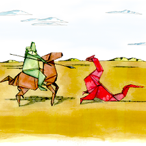
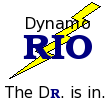
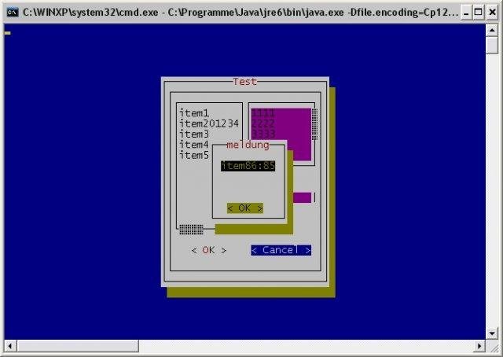

Integration with other tools

Valgrind
Pintool looks more performant than valgrind but for portability it might be interesting to also have integration in with this tool.

DynamoRIO
Similar to pintool but with support of ARM. It might be interesting to compare the final instrumentation performance.
Maqao
This time with static instrumentation, but still interesting. It might require some work to instrumentation the libraries.

Curses GUI
Could be interesting to also get a curses GUI python.

Electron
Provide a standard graphical interface by using electron.